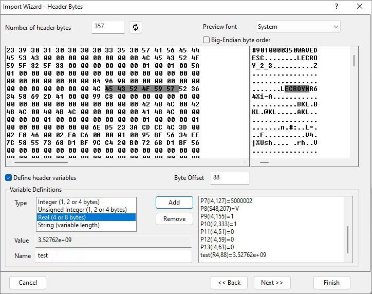

Importassistent, Seite Headerbytes (Binär)
ImpWiz-Bin-HeadBytesPage
Verwenden Sie diese Seite, um den Binärdatei-Header festzulegen und Variablen aus dem Header für die spätere Verwendung zu extrahieren.

Bedienelemente Headerbytes
| Anzahl der Headerbytes |
Legen Sie die Anzahl der Bytes im Headerabschnitt der binären Datei fest, indem Sie eine Zahl eingeben oder den Headerabschnitt grafisch auswählen. Um grafisch auszuwählen, positionieren Sie den Cursor an der gewünschten Stelle in einem der Vorschaufenster (HEX oder ASCII) und klicken Sie dann auf die Schaltfläche Aktualisieren /Refresh.png) rechts neben dem Textfeld Anzahl der Headerbytes. rechts neben dem Textfeld Anzahl der Headerbytes.
|
| Zeichensatz der Vorschau |
Wählen Sie einen Zeichensatz für das Vorschaufenster aus.
|
| Big-Endian Byte-Reihenfolge |
Verwenden Sie dieses Kontrollkästchen, um die Byte-Reihenfolge der Importdaten festzulegen.
|
Vorschaufenster
Das linke Bedienfeld zeigt die Daten in Byteform an, während das rechte Bedienfeld die Daten als ASCII-Text zeigt. Sie können den Cursor in einem der beiden Felder positionieren, um die Anzahl der Header-Bytes oder Byte-Verschiebung grafisch auszuwählen.
Variablen
| Headervariablen definieren |
Wählen Sie dieses Feld, um Variablen aus dem Headerbereich der Datei festzulegen und zu extrahieren. Das Aktivieren dieses Kontrollkästchens stellt weitere Bedienelemente für das Festlegen von Variablen zur Verfügung.
|
| Byte-Verschiebung |
Geben Sie die Byte-Verschiebung einer Variablen in dieses Textfeld (im Headerabschnitt) ein. Die Hex- oder ASCII-Datei zeigt das Update an, um die Verschiebung wiederzugeben.
Sie können die Byte-Verschiebung grafisch festlegen, indem Sie auf die Hex- und ASCII-Dateiansicht klicken. Das Textfeld wird mit dem Byte-Verschiebungswert aktualisiert.
|
| Die Gruppe Variablendefinitionen |
Wenn Sie die Byte-Verschiebung festlegen:
- Markieren Sie die Bytes in der Anzeige, die Ihrer Variablen entsprechen.
- Wählen Sie einen Variablentyp aus der Liste Typ. Der Wert der Variablen wird unten im Ansichtsfeld Wert angezeigt, das Sie nicht bearbeiten können.
- Der Standardname der Variablen lautet Pn. Sie können ihn im Bearbeitungsfeld Name umbenennen.
- Klicken Sie auf Hinzufügen, um der Variablenliste (dem Listenfeld weiter unten rechts) eine Variable hinzuzufügen, die auf der Zielseite gespeichert werden soll.
- Um eine Variable zu entfernen, wählen Sie die Variable im rechten Feld aus und klicken Sie auf Entfernen.
|